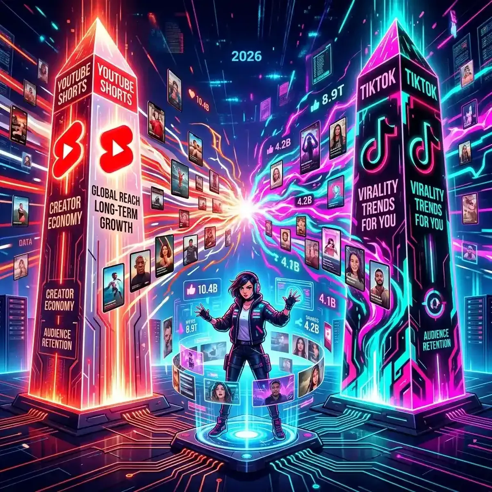

TikTok vs. YouTube Shorts: Which Platform Should You Choose?

In the hyper-accelerated digital landscape of 2026, the dominance of vertical short-form video is absolute, but the primary battleground between TikTok and YouTube Shorts has moved beyond "Scrolling" to "Strategic Ecosystem Integration."
What began as a simple competition for mobile attention has evolved into a complex geopolitical and technological rivalry. TikTok remains the cultural vanguard, defining viral trends and high-dopamine "fame-cycles" through its proprietary "Interest Graph" algorithm. YouTube Shorts, however, has leveraged its position as the world's second-largest "Search Engine" and its massive "Long-Form Heritage" to create a more comprehensive creator ecosystem. For the modern creator or marketer, deciding where to invest their time and production budget is no longer an "either-or" proposition; it is a question of platform-specific intent and long-term revenue viability. This deep-dive guide examines the divergent paths of these two giants and explores how you can align your content strategy with the vertical reality of 2026.
The Algorithmic Divergence: Interests vs. Relationships
One of the most significant differences between the two platforms in 2026 is their "Algorithmic Philosophy." TikTok’s "For You" feed continues to rely on a pure "Interest Graph." The algorithm is exceptionally skilled at identifying a user's subconscious preferences—based on sub-second interactions—and surfacing content that aligns with those niche interests, regardless of whether the user follows the creator. This makes TikTok the king of "Virality-from-Zero," where a brand-new account can reach millions of people purely on the strength of a single video's creative hook.
YouTube Shorts, conversely, is increasingly moving toward a "Relationship & Search Graph." While it uses interest-based discovery, it prioritizes "Channel Continuity." The algorithm wants to see that a user who enjoys a Short also wants to engage with the creator's broader "Portfolio" of content. This makes YouTube Shorts a more powerful tool for building a loyal, long-term "Community Moat." A viewer who discovers an expert technical guide (perhaps using a multi-screen setup like YoutubeMulti) through a Short is far more likely to subscribe and watch the subsequent long-form deep-dives than a transient TikTok scroller. TikTok is for "Exploration"; YouTube Shorts is for "Integration."
Monetization Realities: Creator Funds vs. Revenue Sharing
Monetization has become the primary "Creator Retention" lever in 2026. TikTok has struggled to move past its "Creator Fund" model, which—while improved—still offers relatively low direct payouts for purely viral views. To make a sustainable living on TikTok, creators must rely on third-party brand deals, "Live-Gifting," and "Interactive Commerce" (TikTok Shop). This makes TikTok a high-performance "Marketing Engine" but a challenging "Direct Payout" platform for the majority of creators.
YouTube Shorts has flipped the script by integrating vertical video directly into its "YouTube Partner Program" (YPP). By offering a legitimate percentage of "Shorts Feed Ad Revenue," YouTube has created a clear path to professional-level income based purely on view performance. For creators producing high-value, high-retention technical or educational content, the revenue potential on YouTube Shorts is significantly higher and more stable. This has led to a "Quality Rotation," where creators focusing on high-authority niches (e.g., Finance, B2B Tech, or Advanced Hardware) are prioritizing YouTube Shorts as their primary revenue-generating vertical platform. The "payout transparency" on YouTube is its greatest competitive edge.
Content Longevity: The Searchability of Shorts vs. the Virality of TikTok
Longevity is the "Silent Metric" of the vertical video world. On TikTok, the "Half-Life" of a video is remarkably short. A viral hit can generate massive traffic for 48-72 hours before disappear into the digital archive, rarely to be seen again. This requires a "High-Frequency" posting schedule to maintain momentum. For a marketer or a professional creator, this "Content Treadmill" can lead to rapid burnout and a decline in production quality over time.
YouTube Shorts, however, leverages the power of "Google Search" and "YouTube Discovery." Because each Short is indexed as a searchable and suggestible piece of metadata, it can continue to generate traffic for months or even years after its initial upload. A technical "How-To" Short (e.g., "3 Seconds to Optimize Your Multi-Tube Playback Latency") can become an "Evergreen Asset" that consistently brings in new subscribers to your channel. This "Search-Led Growth" is a massive advantage for anyone building a brand based on authority and problem-solving. On TikTok, you are always "as good as your next post"; on YouTube, your "Archive" is your greatest asset.
The User Experience: Integrated Ecosystems vs. Dedicated Exploration
The 2026 user experience is officially "Context-Dependent." TikTok has lean into its identity as a "Secondary Reality"—a immersive, dedicated app where users go for an intentional escape. It’s a "Single-Task" experience that rewards high visual focus. For a brand's "Aesthetic and Identity," TikTok is the perfect canvas for creative experimentation and raw "Cultural Vibe" storytelling.
YouTube Shorts has integrated vertical video into a "Multi-Format Dashboard." Users frequently switch between Shorts, long-form videos, and live streams in a single session. This creates a "Knowledge Cohesion" that TikTok simply cannot match. For instance, a user can watch a Short highlight of a "Global Election Analysis," then immediately click into the full-length geopolitical deep-dive in the next tile on their multi-screen setup. This flexibility makes YouTube Shorts the preferred platform for "Information-First" consumers. YouTube is a "Digital Desktop"; TikTok is a "Digital Cinema."
Future Outlook: The Convergence of Interactive Commerce and Short-Form
As we look toward 2027, the future of the vertical video battle is "Frictionless Commerce." We are moving toward a world where the boundary between "Content" and "Transaction" will disappear. Both platforms are currently racing to integrate real-time "Product Tags" and interactive "Shoppable AR" overlays into their vertical feeds. Success in this future environment will require creators to be as skilled at "Strategic Product Placement" as they are at "Creative Storytelling." The era of "Passive Ads" is over; the era of "Immersive Consumption" has arrived.
Using YoutubeMulti to Compare Retention for Vertical vs. Horizontal Content
For the professional content strategist, having total situational awareness of how their audience consumes different formats is critical. Using YoutubeMulti to build a "Format Analysis Grid" allows you to:
- Analyze Pacing: Watch your Short highlight side-by-side with your full-length video to see if the "Narrative Thread" is consistent.
- Monitor Engagement: Use one tile for a TikTok live stream and another for a YouTube Shorts reaction to see where your community is most active in real-time.
- Verify Retention: Monitor the first 3 seconds of your vertical content side-by-side with a competitor's to identify the "Visual Hooks" that are currently trending.
- Refine Your Strategy: Decide whether your next big launch should be "Virality-Focused" (TikTok primary) or "Authority-Focused" (YouTube primary).
Conclusion: Final Thoughts on Platform Selection
The 2026 choice between TikTok and YouTube Shorts is a question of "Strategic Objectives." TikTok is the ultimate tool for viral awareness and rapid cultural alignment, while YouTube Shorts is the ultimate platform for building a professional-grade, searchable, and highly monetizable creator ecosystem. By understanding the divergent algorithms and monetization structures of these two giants, and by utilizing advanced tools like YoutubeMulti to monitor your performance, you can ensure that your brand is at the center of the vertical discovery curve. Don't choose a platform—choose a destiny. The era of total vertical awareness has arrived.